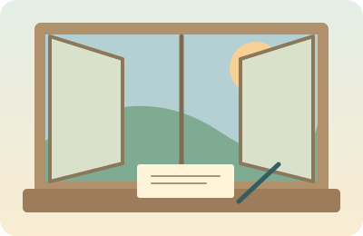

पंक्ति और अर्थ की परतें
Layers of poetic meaning
Audio uses your device’s Hindi voice; availability varies. No native recordings included.मुख्य अवधारणा
Understand the conceptअलग पाठक अलग अर्थ ग्रहण कर सकते हैं। पाठ-आधारित विश्लेषण में कम से कम दो विशिष्ट संकेत और उनकी भूमिका स्पष्ट करें।
शब्द और अर्थ
Vocabularyउदाहरण और पठन
Examples & readingखुली खिड़की और बंद द्वार में विरोध बन सकता है।
पंक्ति के दोहराव से नया बल आता है।
मुक्तछंद में भी लय संभव है।
विस्तृत पठन
Extended reading
खुली खिड़की
मैंने खिड़की खुली रखी,
जब बाहर कोई नहीं था।
हवा ने मेज़ पर रखा कागज़ सरकाया,
उस पर अधूरी पंक्ति थी।
दूर से किसी बच्चे की हँसी आई,
और मैंने फिर कलम उठाई।
दरवाज़े के बाहर शाम ठहरी थी,
भीतर एक नया वाक्य जाग रहा था।
पठन-बोध
वक्ता कौन है?
प्रथम पुरुष में बोलता एक अनिर्दिष्ट व्यक्ति।
खिड़की और कलम का क्या संभावित संकेत है?
बाहरी अनुभव और सृजन के बीच संपर्क।
अंत में किस परिवर्तन का संकेत है?
अधूरेपन से फिर लेखन की ओर।
बोलें और सोचें
Apply itमौलिक कविता के दो बिंबों का अलग प्रभाव लिखें।
लेखन अभ्यास
Writing practiceउदाहरण का विश्लेषण करें, फिर अपना स्वतंत्र उत्तर प्रमाण सहित लिखें।
स्वतंत्र लेखन कक्ष
Writing workspaceअपना ज्ञान जाँचें
Check your learningक्या हर पंक्ति का केवल एक अर्थ होता है?
उत्तर देखें
नहीं, पर हर व्याख्या को पाठ से समर्थन मिलना चाहिए।
इस पाठ में दिए गए अर्थ से शब्द मिलाएँ: image
उत्तर
बिंब
Completion is self-marked and saved locally.